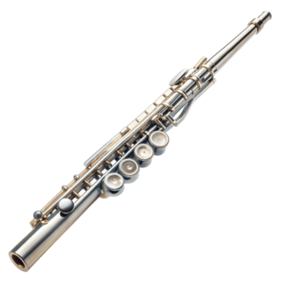
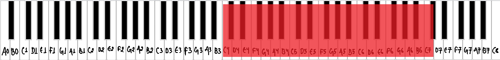
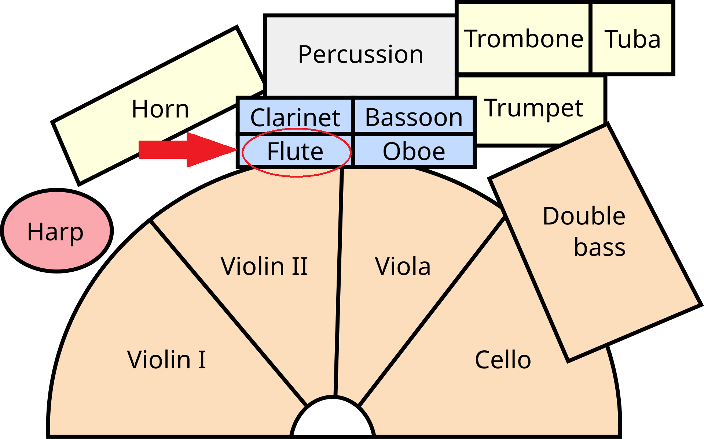

What is a flute?
The flute is a woodwind instrument that makes sound without a reed. The player blows a focused stream of air across an opening in the tube, much like blowing across the top of a bottle. Modern orchestral flutes are metal and held out to the player's right side. [1]

Musical range and clef
A standard flute spans about three octaves, from C4 (middle C) up to roughly C7. Players with a B-foot joint can reach one note lower, to B3. [2]
Flute music is written in the treble clef. The notes sit comfortably on and above the staff, and the highest notes use many ledger lines. [3]

Where is the flute seated in an orchestra?
Woodwinds sit in the middle of the orchestra, behind the strings and in front of the brass and percussion. From the conductor's podium, the flutes are on the left of the woodwind rows, followed by the oboes, clarinets and bassoons toward the right. Flutists usually sit at the front left of the woodwind row. [4]
Popular songs/pieces that feature the instrument:
References
- Britannica, "Flute".
- Wikipedia, "Flute".
- Wikipedia, "Flute".
- Rockford Symphony Orchestra, "Are all orchestras arranged on stage the same way?".